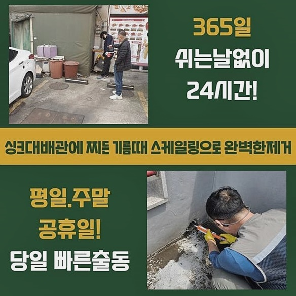
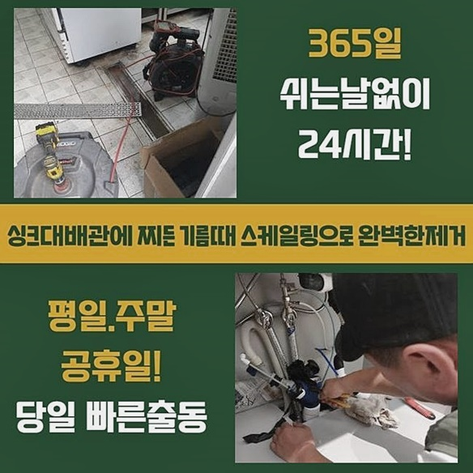
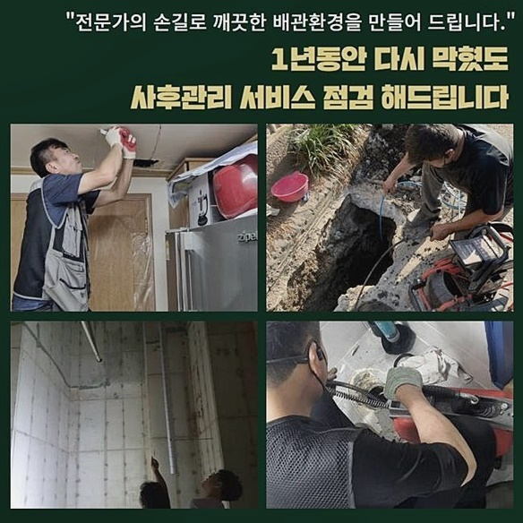
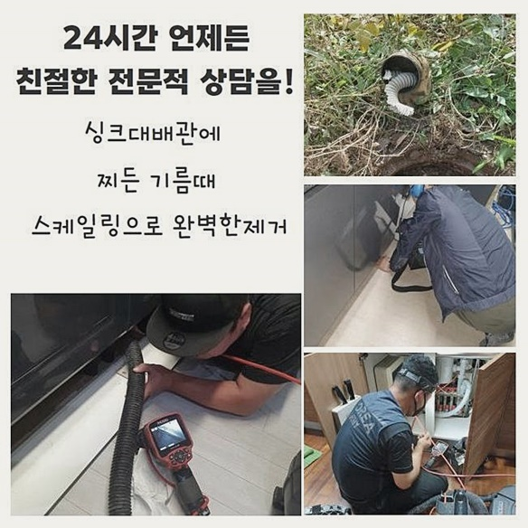
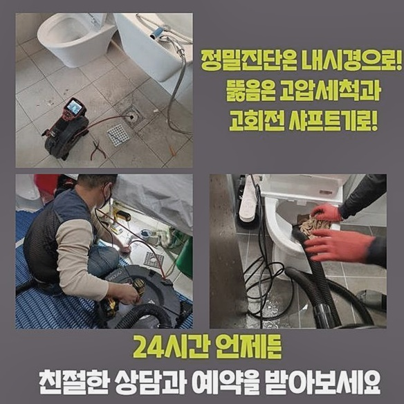
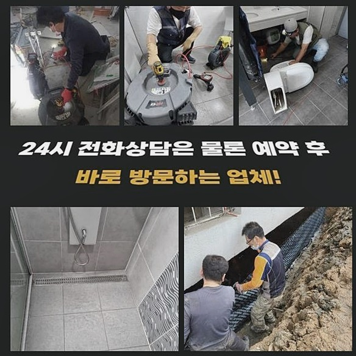
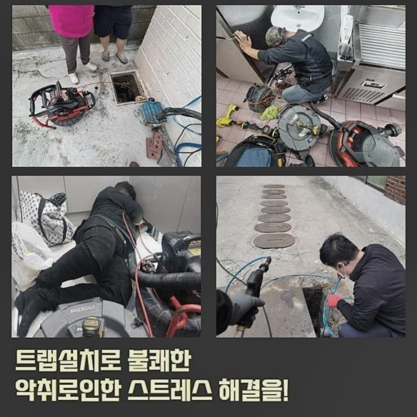

🏠 강서구 공항동세탁기배수구막힘 과해동 배수구뚫기 설비업체
용인시 처인구 배관막힘 전문 시공 후기

📋 작업 개요
- 위치: 용인시 처인구, 수원시 영통구, 화성시 동탄
- 서비스 유형: 배관막힘, 누수수리, 고압세척, 내시경점검
- 작업 일시:
- 업체명: 하수구수사대 (010-5615-2118)
🔍 문제 상황
강서구 공항동세탁기배수구막힘 과해동 배수구뚫기 설비업체
안녕하신가요 신속하게 방문드리는 저희들은 출장비용에 대하여 받고있지않고 실패를했을때도 같이적용시켜 비용적인부분을 요구하지않아요
저희업체에 의뢰해주시는 고객님들을 위해서 1년동안 추후관리를 진행하고있습니다
배관막힘이 일어났을때 고객분들은 어떤방식으로 해결하고자 하나요
하루전에 해결했었던 작업사례를 통하여 막힌배관을 뚫어내는방법을 알려드리려고하니 참고하신다면 도움될거라고 생각해요
작업난이도가 복잡하다고해서 타업체들에서 포기할때도 있어요
저희업체는 최선을다하여 작업에착수해 해결하기위해 애쓰고있죠
고객분의 요청시간에 맞추어서 내방까지 해드리고있죠
얼마전에 내방했던 작업현장도 별탈없이 해결할수있었어요
방문전에는 단순막힘이라고 생각하고있었어요
의뢰자께서 현장을촬영해서 보여주신걸로 내방전에 추측할수있었어요
그치만 확인해보니 메인배관까지 문제가있는 심화된 작업장소였어요
그렇기에 내부와 외부하수도까지 꼼꼼히작업해 해결할수가 있었답니다

🔎 원인 분석
💡 전문가 진단: 정밀 진단 장비를 사용하여 슬러지의 고착 여부를 판명하고 타격/세척 작업을 실시했습니다.
다음장소로 이동하였는데 고객님께서 전달주신내용은 욕실배수구쪽 부근에서 물이조금씩 역류하다가 하루지나고 살펴보니 완전히막혀 물이흐르지 못했다고하셨어요
급급한심정에 뚫는법을 알아보다가 셀프조치를 하셨다고 말씀해주셨습니다
과도한 조치때문에 오물과 이물들이 역류하게되면서 악취현상까지 일어나면서 문제가 심각해졌는데요
이제는 손쓸수없다보니 배관업체를 찾아보다가 전화를주신것이죠
물이역류하는것은 거의 배관내부에서 오염물들이 유입되고 계속해서 쌓이고쌓여 막히게되는 것입니다
막힘문제를 처리하고자 하수구작업시 필수적인 전문장비를 활용했죠
우선흡입기로 배관안에있는 물과오물을 흡입합니다
잔여물흡입을 1차적으로 진행하지않는다면 정확한해결이 불가합니다
이후엔 하수구안속의 석회들을 샤프트기계를 활용해서 제거하면됩니다
샤프트도구는 딱딱하게굳어진 잔해물질을 분쇄하는 기기라고 할수있죠
한가지더 필수적인기계를 알려드려보겠습니다
하수관막힘이 발현된지점을 알아내기위해선 배관카메라가 필요합니다
내시경카메라를 투입하면 하수구깊은 위치까지 살필수있기에 정확히 막힌문제를 짚어낼수있어요
내시경카메라로 증세를확인하니 욕실과이어진 배수관에도 증세가있는걸 확인이가능했죠

🔧 작업 과정
외부로이동해서 메인배관을 열어보았더니 오염물이가득차 넘칠수도있었어요
막힘증세의 까닭이었으므로 스케일링과정을 진행하고자했죠
입구에들어찬 물을흡입한뒤 배관내부작업에 착수하기로했어요
흡입하다보면 예상보다 오물의양이 상당하기에 시간이걸릴수 있답니다
하지만 이 과정이 중요한 단계이니 다 빨아들일 수 있도록 했습니다
그제야입구가 보이기시작해 하수관속을 살필수있게끔 전동스프링장비를 통하여 막힌쪽을 통수시켰답니다
통수작업후 고압청소기를 사용하는 작업계획으로 진행하면되는데 강력한압을통해 오염물이 자리하고있는 위치에 물을쏘게되는 것인데요
고압세척장비는 여러도구중 전문성이필요한 장비라고할수있죠
강한압력의 물을사용하므로 배관파손이 발현될수있기 때문입니다
고압세척작업이 마무리되면 배관속이물이 떨어져나가게 되는것이죠
고착이물을 제거한뒤 필수적으로 진행되야하는건 석션기를활용해 남은이물을 흡입시키는 과정이랍니다
스켈링과정을 마친후에는 깨끗하게 제거가되었는지 내시경카메라로 하수도를 체크해봅니다
잔여이물이 발견되서 재차제거해 확실히 마무리할수있었어요
확실하게 물빠짐이 이루어지는지도 확인하고있죠
의뢰자와함께 배수상황을 확인한후에 철수해드리니 걱정하지않으셔도 된답니다
막힘증세를 해결하지못하고 방치하시면 2차문제로 발발되어 역류문제나 누수문제까지 발현될수있으므로 막힘징조를 보일때 대처해보실것을 추천드려요
날이선물체로 하수관을 들쑤시는것은 손상으로 이어질수있으므로 자제해주시는것이 좋은데요
다시한번 강조드리는것으로 과도하게 셀프조치로 시도하는것은 문제현상이 악화될수있으니 조심해주세요!
다세대건물이나 식당같이 영업을 하는곳이라면 주기로 점검을진행하여 예방을 하시는것이 막힘을 방지할수있는 좋은방법이죠
여러번 일러드렸지만 확실한해결을 하고싶다면 막힌이유가 무엇인지 알아낸후 해결하는법을 알아내는게 중요해요
막힘현상에 대해서 방치하지말고 저희에게 맡겨주세요!


✅ 작업 완료
업체선정할때 살펴봐야할 사항이많은데 두가지 일러드리면 배관장비에있어 다양하게 갖추고있는지와 수리금액에 대하여 작업착수전 공개해주는지 체크해야합니다
저희의경우 현장으로이동해 꼼꼼히 문제를살피고서 수리금액을 고지드리고 고객께서 동의해야지만 작업을 진행하기때문에 안심해주세요
1시간내로 도착해드릴수있고 작업계획에있어 투명한 방법으로 공개해드리기에 우려하지마세요!
저흴 찾으시면 신뢰에 보답할수있게끔 최선을다해 작업하여 뚫어내는결과물로 보여드려볼게요
이밖으로도 궁금한점이 있다고한다면 마음편히 언제라도 전화하셔서 여쭤보시면 상세히 응대해드릴게요
이번시간에 포스팅한 내용이 도움이 되었을지는 모르지만 이만 마치도록할게요! 감사합니다!




⚠️ 하수구 배관 막힘 예방 및 관리 가이드
- ✅ 머리카락, 비닐, 물티슈 등 물에 분해되지 않는 이물질은 절대 흘려보내지 마세요.
- ✅ 기름기 많은 식기는 설거지 전 키친타올로 먼저 기름때를 닦아내세요.
- ✅ 주기적으로 배수구에 뜨거운 물을 가득 부어주어 유지방 고착을 방지하세요.
- ✅ 작업 후 1년 이내 재발 시 무상 A/S 보증 서비스를 제공합니다.
💡 핵심 정리
- 확실한 장비 작업(내시경 점검 및 샤프트 스케일링)으로 원인을 뿌리 뽑습니다.
- 작업 후 1년 이내에 동일한 부위 재발 시 100% 무상 A/S 서비스를 보장합니다.
- 서울 · 경기 · 인천 전 지역에 24시간 언제든 긴급 출동할 수 있도록 항시 대기 중입니다.
❓ 자주 묻는 질문 (FAQ)
🚨 용인시 처인구 배관막힘 문제로 고민이신가요?
정확한 원인 진단과 확실한 시공으로 재발 없는 해결을 약속드립니다.
24시간 긴급 출동 | 서울 · 경기 · 인천 전지역 | 1년 내 재발 시 무상 A/S